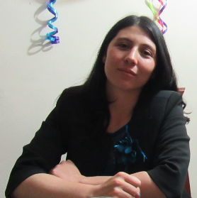

Soy libre, ya puedo vivir mi vida en paz.
 Soy Amanda, profesional en matemática, tengo conocimiento en teoria de grafos que el tema en el cual se enfoco mi trabajo de grado en matemática. Durante el tiempo transcurrido despues del grado he afianzado lazos familiares (o mas bien los he destrozado). He realizado labores del campo, siendo capaz de cumplir un horario determinado. Ademas de las labores agricolas, en este momento estoy aprendiendo diseño web HTML, CSS, javascript.
Soy profesional en matemática de la Universidad Sergio Arboleda. Graduada en mayo del 2019. Con conocimiento en actualmente ni excel puedo decir. Un matemático es un profesional que se forma en componentes como la comprensión lectora y el análisis. Entre otros estudios que he realizado se puede mencionar contabilidad basica con el Sena. Aprendi sobre lecturas de presupuestos en empresas sin animo de lucro.
Durante la carrera universitaria tuve la oportunidad de trabajar como docente y monitora en un programa del distrito, el tema fue teoria de grafos y fue impartido a estudiantes de colegios distritales de decimo y once. Tambien trabaje como docente en el programa de talentos matematicos durante el segundo semestre del 2016, igualmente en teoria de grafos.
Ser bilingüe, este proyecto ha tenido muchos tropiezos en su mayoria por la falta de dedicación.
Hacer una maestria (en matematica aplicada) antes de los treinta.
Estoy aprendiendo diseño web (HTML, CSS, javascript) paranguarecutirimicuaro a mi tiempo, con la instrucción de mi amigo Sergio.
Diseño guias para el desarrollo cognitivo de los estudiantes preescolares, basadas en un plan de estudios.
Aprendo terminologia, recursos y procedimientos en la extracción de carbón artesanal.
Entre las metas familiares esta el convertirme en una persona que pueda apoyar y compartir tiempo con mis seres queridos mi familia y mis amigos.